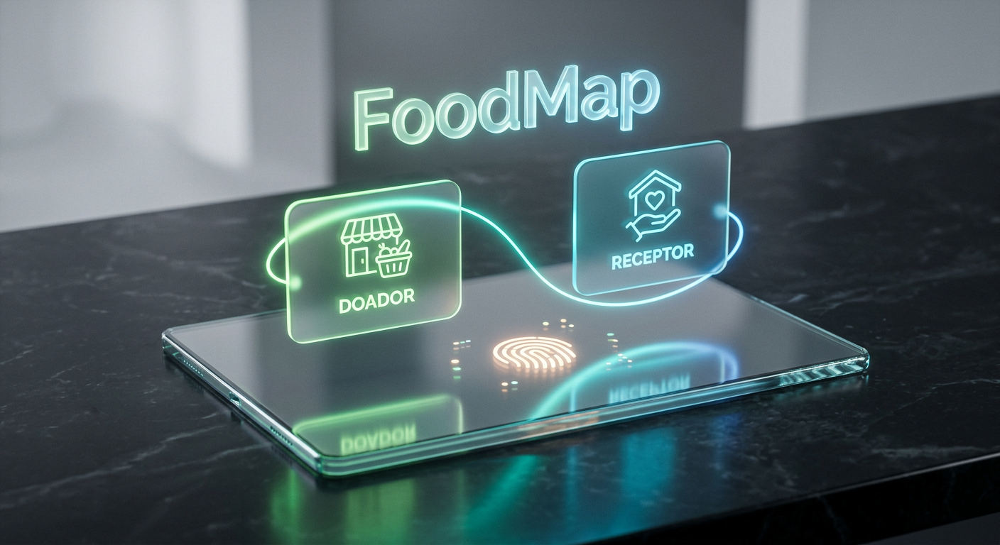

2. Status e Rastreabilidade da Doação
Acompanhe todo o processo de doação com transparência total. O fluxo segue o
ciclo vital do alimento desde a disponibilização até a chegada ao destino final, garantindo que o
impacto seja concretizado.
- Ciclo rastreável: Disponível → Em Rota → Entregue.
- Atualização de status em tempo real para ambas as partes.
- Confirmação digital de recebimento e histórico completo de doações.
3. Cadastro de Doador e Receptor
Nossa plataforma é aberta e inclusiva. O cadastro é simples e rápido para
que todos possam participar do combate ao desperdício, seja você uma pessoa física, uma empresa ou
uma instituição social.
- Cadastro de doador: tipo, quantidade, validade e horário disponível.
- Cadastro de receptor: endereço, perfil de atendimento e capacidade.
- Área dedicada para voluntários de transporte e apoio logístico.
